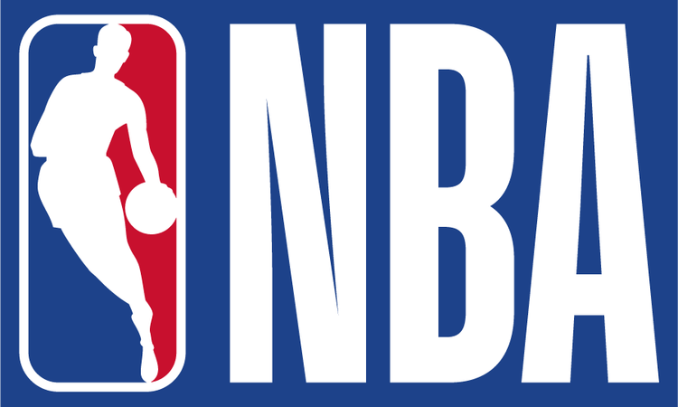

NBA RANKINGS

1.Clippers: Leonard and PG13 look to start a new dynasty.
2. Bucks: Giannis coming of an MVP looks to get the Bucks to their first finals apperance.
3. Nuggets: Jokic carried this team to the second round but will need more help form Murray and more in 2019-2020.
4. 76ers: A young core emerging with an East open for anyones taking.
5. Rockets: Adding Russel Westrbook is the mssing peice but will he fit in with James Harden.
6. Lakers: LeBron and new coach Frank Vogel added some new peices led by Anthony Davis to look and get back to the glory days in LA.
7. Celtics: After getting exposed in the playoffs adding Kemba looks to be the new peice they need.
8. Trail Blazers: After a Western Confernce berth last year the Blazers look to make it one round further to the Finals.
9. Jazz: Adding Conley to add with Donavan Mitchell is a good peice to get past th second round this year.
10. Raptors: They won a title but can they do it with Siakam, Lowry, and Van Fleet
11. Warriors: The dyansty is over and Curry has to carry by himself with D-Lo as his robin.
12. Nets: KD is out and Krie can't lead a team so they are probably a year out of contention.
13. Spurs: Stuck in that OK range might be and 8 seed might not but got to make up your mind.
14. Heat: Jimmy Butler and Tyler Herro look to lead Miami to the playoffs after missing in 2019.
15. Pacers: They need Oladipo.
16. Pistons: Probably be .500 but you got Derek Rose.
17. Pelicans: So much young good talent plus Zion, who knows?
18. Mavericks: Luka Doncic and Porzingas are looking to take the Mavericks to the playoffs for the first time since their suprise championship.
19. Magic: After a suprise playoff berth the core is back to look and make it past the first round in 2020.
20. Kings: Built for a playoff run can the Kings live up to the expectations.
21. Timberwolves: Karl-Anthony Towns can't do it by himself but this team just keeps underperforming.
22. Hawks: Trae Young is a star but is the rest of the team?
23. Bulls: Emerging talent and leadership now helathy for the Bulls could upset the league.
24. Thunder: Chris Pauls contract is soo bad no one wants heim and draft picks not for 5-10 years its going to be a while in OKC.
25. Suns: Booker needs to win and the talent around might be able to help if a miracle happens.
26. Grizzilies: New rookies and young talent led by Ja Morant start a rebuild.
27. Wizards: Wall still not healthy and Bradley Beal;s back to carry and now Sashi Brown the GM that destroyed the Browns is here.
28. Knicks: After you promise KD and Kyrie and come back with Randle its not a good look or a good team.
29. Hornets: Kemba is gone and it looks like a tank is starting for Michael Jordans Hornets.
30. Cavs: A new coach and a young core of Sexton,Garland,Porter Jr., and Osman look to be 8 seed sleepers.